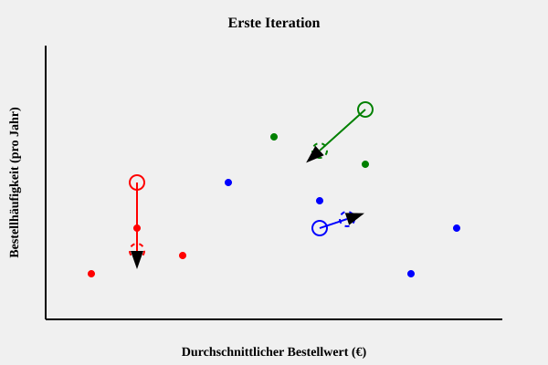

Überblick › LB 10/11 KI und Projektmanagement
11.7 k-Means-Clustering
k-Means-Clustering ist ein unüberwachter Lernalgorithmus, der verwendet wird, um Datenpunkte in k Cluster zu gruppieren. Er hilft, Muster in Daten zu erkennen, ohne dass diese vorher gekennzeichnet werden müssen.
Anwendungsbeispiele
- Kundensegmentierung: Ein Online-Shop kann Kunden basierend auf ihrem Einkaufsverhalten in Cluster einteilen, um gezielte Marketingstrategien zu entwickeln.
- Bildkompression: k-Means reduziert die Anzahl der Farben in einem Bild, indem es ähnliche Farbtöne zu Clustern zusammenfasst.
- Anomalieerkennung: k-Means ordnet jeden Punkt einem Cluster zu. Als Anomalien gelten deshalb Punkte, die ungewöhnlich weit von ihrem eigenen Cluster-Zentrum entfernt liegen (oder sehr kleine Cluster bilden), z. B. ungewöhnliche Netzwerkzugriffe oder Betrugsfälle. Verfahren wie DBSCAN können Punkte dagegen ausdrücklich als „keinem Cluster zugehörig“ (Rauschen) markieren.
1. Wie funktioniert k-Means-Clustering?
- Wähle k (die Anzahl der Cluster).
- Initialisiere die k Cluster-Zentren, z. B. indem k zufällige Datenpunkte als Startzentren gewählt werden.
- Weise jedem Datenpunkt das nächstgelegene Cluster-Zentrum zu.
- Berechne die neue Position der Cluster-Zentren als Durchschnittsposition (Mittelwert) aller Punkte in jedem Cluster.
- Wiederhole die Schritte 3 und 4, bis sich die Cluster-Zentren nicht mehr signifikant ändern (Konvergenz) oder eine maximale Anzahl von Iterationen erreicht ist.
Konvergenz: Der Algorithmus erreicht Konvergenz, wenn die Positionen der Cluster-Zentren zwischen zwei Iterationen kaum oder gar nicht mehr variieren. Dies bedeutet, dass sich die Cluster stabilisiert haben.




Diese vier Diagramme zeigen den k-Means-Clustering-Prozess Schritt für Schritt:
- Initialzustand: Alle Datenpunkte sind grau, und die initialen Cluster-Zentren sind zufällig platziert.
- Erste Iteration: Die Datenpunkte werden den nächstgelegenen Cluster-Zentren zugeordnet (farblich markiert). Die Cluster-Zentren bewegen sich zum Durchschnitt ihrer zugeordneten Punkte.
- Zweite Iteration: Die Cluster-Zentren bewegen sich weiter, und einige Datenpunkte ändern möglicherweise ihre Clusterzugehörigkeit (durch erneute Abstandsberechnung).
- Finaler Zustand: Die Cluster-Zentren haben ihre endgültigen Positionen erreicht, und die Datenpunkte sind in ihre finalen Cluster eingeteilt.
2. Abstandsmessungen zum Cluster-Zentrum
Ein wichtiger Aspekt des k-Means-Algorithmus ist die Messung des Abstands zwischen Datenpunkten und den Cluster-Zentren. Es gibt verschiedene Methoden, diesen Abstand zu berechnen:
2.1 Euklidischer Abstand
Dies ist die am häufigsten verwendete Abstandsmessung. Sie entspricht der „Luftlinie“ zwischen zwei Punkten.
Formel: d = √((x₂ − x₁)² + (y₂ − y₁)²)
2.2 Manhattan-Abstand
Auch bekannt als „City-Block-Distanz“. Hier wird die Summe der absoluten Differenzen der Koordinaten berechnet – so, als würde man in Manhattan nur entlang der Straßenblöcke laufen.
Formel: d = |x₂ − x₁| + |y₂ − y₁|
2.3 Unterschiede zwischen den Abständen

- Der Manhattan-Abstand ist nie kleiner als der euklidische Abstand. Gleich sind beide nur, wenn die Punkte horizontal oder vertikal nebeneinander liegen (z. B. (0|0) und (3|0): beide Abstände 3).
- Bei diagonaler Anordnung (45°) ist der Unterschied am größten: Von (0|0) nach (1|1) beträgt der euklidische Abstand √2 ≈ 1,41, der Manhattan-Abstand 2 – also das √2-Fache. In zwei Dimensionen liegt der Manhattan-Abstand deshalb immer zwischen dem 1- und dem √2-Fachen des euklidischen Abstands.
- Der Manhattan-Abstand folgt den Gitterlinien, während der euklidische Abstand die direkte Verbindung darstellt.
- Die Wahl der Distanzmetrik kann die Clustering-Ergebnisse beeinflussen, insbesondere bei speziellen Datenstrukturen.
Hinweis: Manhattan-Abstand und k-Medians
Der Mittelwert ist genau der Punkt, der die Summe der quadrierten euklidischen Abstände minimiert – deshalb passen Mittelwert und euklidischer Abstand bei k-Means zusammen. Verwendet man den Manhattan-Abstand, ist der Median der Koordinaten das passende Zentrum. Dieses Verfahren heißt k-Medians. Manhattan-Abstand mit Mittelwert-Zentren zu kombinieren, ist ein Mischverfahren, das funktioniert, aber streng genommen weder k-Means noch k-Medians ist.
Hinweis: Wie bestimmt man eigentlich k?
Es gibt mehrere Möglichkeiten, k zu bestimmen, die meist von der Aufgabe abhängen.
Wenn bestimmte Cluster gebildet werden sollen, lässt sich k meistens schon daraus abschätzen (z. B. bestimmte Nutzergruppen oder bestimmte Artikel).
Wenn keine Anzahl an gewünschten Gruppen bekannt ist, gibt es verschiedene Abschätzungsmethoden wie z. B. die Ellbogenmethode (Elbow-Methode). Dabei berechnet man für mehrere Werte von k die Summe der quadrierten Abstände (SSE). Der Punkt, an dem die Abnahme der SSE deutlich langsamer wird (ähnlich einem „Knick“), wird als geeigneter Wert für k angesehen.
Beispiel:
- k = 2: SSE = 150
- k = 3: SSE = 75
- k = 4: SSE = 40
- k = 5: SSE = 38
Hier wäre k = 4 geeignet, da die Abnahme der SSE nach diesem Punkt nur noch minimal ist.
Berechnung der SSE
Die SSE wird wie folgt berechnet:
- Berechne für jeden Datenpunkt den Abstand zu seinem zugeordneten Cluster-Zentrum.
- Quadriere diesen Abstand.
- Summiere die quadrierten Abstände über alle Datenpunkte.
Formel: SSE = Σ d(xᵢ, cᵢ)². Dabei ist xᵢ ein Datenpunkt, cᵢ das ihm zugeordnete Cluster-Zentrum, und die Summe läuft über alle Datenpunkte.
Beispiel: Gegeben sind die Datenpunkte (1|1), (2|2), (3|3) und das Cluster-Zentrum (2|2).
- Abstand von (1|1) zu (2|2): √((2 − 1)² + (2 − 1)²) = √2 → Quadrat = 2
- Abstand von (2|2) zu (2|2): 0 → Quadrat = 0
- Abstand von (3|3) zu (2|2): √((3 − 2)² + (3 − 2)²) = √2 → Quadrat = 2
SSE: 2 + 0 + 2 = 4
3. Vor- und Nachteile von k-Means-Clustering
Vorteile
- einfach zu verstehen und umzusetzen
- skaliert gut für große Datensätze
Nachteile
- Die Anzahl der Cluster (k) muss im Voraus festgelegt werden.
- empfindlich gegenüber der initialen Platzierung der Cluster-Zentren (deshalb startet man mehrfach und nimmt das Ergebnis mit der kleinsten SSE)
- hat Schwierigkeiten mit nicht kugelförmigen Clustern
- sehr anfällig für Ausreißer im Datensatz, weil sie den Mittelwert stark verschieben
Praxisbezug: Segmentierung im Handel und in der Industrie
Alltag: Wenn ein Online-Shop dir andere Angebote zeigt als deinen Eltern, steckt oft eine Kundensegmentierung dahinter.
Beruf: Data Scientists im Marketing nutzen Clustering, um Zielgruppen zu bilden, und in der Produktion, um typische Betriebszustände von Maschinen zu erkennen – ein Messwert weit weg von allen bekannten Zentren kann auf einen beginnenden Defekt hinweisen. Solche Verfahren zur vorausschauenden Wartung werden u. a. in der sächsischen Industrie und an Forschungseinrichtungen wie dem Fraunhofer IWU erforscht.
Das Wichtigste
k-Means: unüberwachtes Verfahren, das Datenpunkte ohne vorgegebene Ergebnisse in k Cluster einteilt.
Zuordnung und Zentren: Jeder Punkt gehört zu dem Cluster, dessen Zentrum ihm am nächsten liegt, und jedes Zentrum ist der Mittelwert seiner Punkte. Beides wird wiederholt, bis sich die Zuordnung nicht mehr ändert.
Ziel: eine möglichst kleine Summe der quadrierten Abstände der Punkte zu ihren Zentren (SSE).
Mehr Merkmale: Abstände lassen sich genauso für beliebig viele Merkmale berechnen. Wie bei k-NN müssen die Merkmale vorher skaliert werden.
Zum Nachlesen: Abstand bei mehr als zwei Merkmalen
Die Formeln oben sind der Übersichtlichkeit halber nur für zwei Merkmale (x und y) dargestellt. In der Praxis haben Datenpunkte oft viel mehr Merkmale (z. B. Blütenblattlänge, Blütenblattbreite, Kelchblattlänge und Kelchblattbreite bei Blumendaten – also 4 Merkmale). Die Formeln lassen sich aber einfach erweitern: Für jedes weitere Merkmal kommt ein zusätzlicher Term hinzu. Beim euklidischen Abstand zweier Punkte p = (p₁, …, pₙ) und q = (q₁, …, qₙ) mit n Merkmalen gilt: d = √((p₁ − q₁)² + (p₂ − q₂)² + … + (pₙ − qₙ)²). Python-Bibliotheken berechnen das automatisch für beliebig viele Merkmale. Wie bei k-NN (11.6) müssen die Merkmale dafür vorher skaliert werden.
Grundaufgaben
Aufgabe 11.7.1: k-Means-Algorithmus anwenden AFB I–II
Lade das folgende Arbeitsblatt herunter und bearbeite Arbeitsauftrag 1 und 2: Arbeitsblatt k-Means (nur im Unterricht). Verwende zur Berechnung der Entfernung den euklidischen Abstand (auf ganze bzw. eine Nachkommastelle gerundet genügt).
Aufgabe 11.7.3: Kundensegmentierung AFB II–III
Ein Online-Shop möchte seine Kunden in Gruppen einteilen, um gezielte Marketingstrategien zu entwickeln. Folgende Daten stehen für jeden Kunden zur Verfügung:
- durchschnittlicher Bestellwert
- Anzahl der Bestellungen pro Jahr
- Zeitspanne seit der letzten Bestellung in Tagen
- Wie würdest du den k-Means-Algorithmus auf dieses Szenario anwenden?
- Welche Vorverarbeitung der Daten könnte notwendig sein?
- Wie würdest du einen geeigneten Wert für k bestimmen?
- Welche Herausforderungen könnten bei der Interpretation der Ergebnisse auftreten?
Das kann ich jetzt
Grau steht, was der Lehrplan verlangt, darunter, was das für dieses Thema konkret heißt. Hake einen Punkt ab, wenn er in deinem Hefter zusammengefasst ist und du ihn ohne Hilfe kannst. Wie du ihn zusammenfasst, entscheidest du selbst. Die Haken speichert nur dein Browser.
Lehrplan LB 10 Maschinelles Lernen: überwacht, unüberwacht, bestärkend (Kennen von Grundlagen Künstlicher Intelligenz)